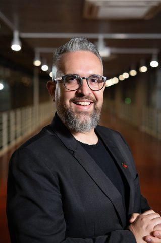
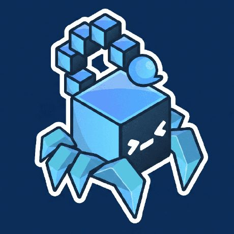
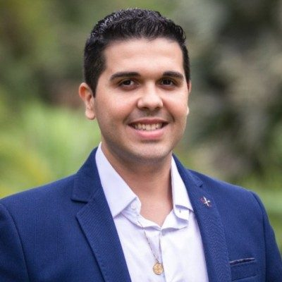

Jefferson Santana
Game Design
IFSP · Câmpus Araraquara
26, 27 e 28 de outubro
Três dias de palestras e mini-cursos com profissionais e instituições da área de tecnologia, abertos a alunos do IFSP e ao público externo.
A Semana da Informática é um evento tradicional do IFSP, realizado em diversos câmpus do instituto, que reúne palestras, mini-cursos e mesas-redondas voltados à comunidade acadêmica e ao público externo. O objetivo é aproximar estudantes de profissionais e empresas da área de tecnologia, compartilhando tendências de mercado, novas tecnologias e oportunidades de carreira.
Na edição 2026 do Câmpus Araraquara, o evento acontece nos dias 26, 27 e 28 de outubro, com programação organizada por uma comissão de alunos sob orientação de um professor responsável.
A grade abaixo é atualizada conforme os palestrantes e mini-cursos vão sendo confirmados. Horários marcados como vaga em aberto ainda estão disponíveis — veja como propor uma palestra ou mini-curso. Todas as palestras acontecem no Auditório do IFSP Câmpus Araraquara.
Jefferson Santana
Auditório · IFSP Câmpus Araraquara
Scorpion Bits
Auditório · IFSP Câmpus Araraquara
João Paulo Machado Vieira — Empresário e Especialista em TI e Cibersegurança
Auditório · IFSP Câmpus Araraquara
João Paulo Machado Vieira — Empresário e Especialista em TI e Cibersegurança
Auditório · IFSP Câmpus Araraquara
Mini-cursos de 2 dias (1h30 por dia), dentro dos blocos de manhã, tarde ou noite. Dia e horário exatos de cada um serão publicados assim que fechados.
Reserva: se faltar palestrante em algum horário, o Thales também tem pronta uma palestra sobre engenharia social e ataques de phishing.

Game Design

Mercado de Trabalho em Jogos
Estúdio de desenvolvimento de jogos formado por alunos do câmpus.

Desafios em Cibersegurança no Ambiente Digital
Empresário e Especialista em TI e Cibersegurança.
Sua palestra ou mini-curso aqui
Quero participarAinda temos horários em aberto nos três dias do evento, incluindo o dia 28/10 inteiro. Se você é profissional, professor, instituição ou empresa da área de tecnologia e quer ministrar uma palestra ou um mini-curso (de até dois dias), entre em contato com a organização.
Falar com a organização